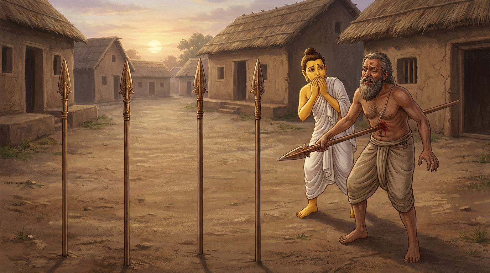

6. දුබ්බච ජාතකය (116)
“අතිකරමකරාචරියා” යන මේ දේශනාව බුදුරජාණන් වහන්සේ ජේතවනාරාමයෙහි වැඩ වාසය කරන සමයෙහි, එක්තරා අකීකරු භික්ෂුවක් අරබයා වදාළ සේක. ඒ කථා පුවත නව වැනි නිපාතයෙහි ගිජ්ඣ ජාතකයෙහි (ජාතක අංක 427) ප්රකට වන්නේය. බුදුරජාණන් වහන්සේ ඒ භික්ෂුව අමතා, “මහණ, ඔබ දැන් පමණක් නොව පෙරත් අකීකරු වූවෙහිය. අකීකරුකම නිසාම නුවණැත්තන්ගේ අවවාදය නොපිළිගෙන, අඩයටි පහරින් මරණයට පත් වූවෙහිය” යි වදාරා අතීත කථාව ගෙනහැර දැක්වූ සේක.
අතීතයෙහි බරණැස් නුවර බ්රහ්මදත්ත රජු රාජ්ය කරන සමයෙහි බෝසතාණන් වහන්සේ අඩයටි පනින නළු කුලයක ඉපිද, වැඩිවිය පැමිණි පසු නුවණැතිව උපායශීලී වූහ. හෙතෙම එක් නළුවෙකු සමීපයෙහි අඩයටි පනින ශිල්පය පුහුණු වී, ආචාර්යවරයා සමඟ ශිල්ප දක්වමින් හැසිරෙයි. මොහුගේ ආචාර්යවරයා දන්නේ අඩයටි හතරකින් පැන යන ශිල්පය පමණක් වන අතර, පස් වැනි අඩයටියෙන් පැන යන ශිල්පය නොදනී. හෙතෙම එක් දිනක් කුඩා ගමක ශිල්ප දක්වන්නේ, සුරා මදයෙන් මත් වී “මම අඩයටි පහක් මතින් පනින්නෙමි” යි පිළිවෙළින් අඩයටි තැබීය. එවිට බෝසතාණන් වහන්සේ ඔහුට, “ආචාර්යවරුනි, ඔබ අඩයටි පහක් මතින් පැනීමේ ශිල්පය නොදන්නෙහිය. එක් අඩයටියක් ඉවත් කරන්න. එසේ නොකළහොත් පස් වැනි අඩයටියෙහි ඇමිණී මරණයට පත්වන්නෙහිය” යි කීහ. හෙතෙම අධික ලෙස මත් වී සිටි බැවින්, “ඔබ මගේ තරම නොදන්නෙහිය” යි කියා, ඔහුගේ බස නොපිළිගෙන අඩයටි හතරක් පැන, පස් වැනි අඩයටියෙහි රිටක ඇමුණු මී මලක් මෙන් ඇමිණී වැළපෙමින් බිම ඇද වැටුණේය. ඉක්බිති බෝසතාණන් වහන්සේ, “නුවණැත්තන්ගේ වචනය නොසලකා හැර ඔබ මේ විපතට පත්වූවෙහිය” යි පවසා මෙම ගාථාව වදාළහ.

“ආචාර්යවරුනි, ඔබ තමාට කළ නොහැකි, පමණ ඉක්මවා ගිය දෙයක් කළෙහිය. මට නම් එය රුචි නොවේ. ඔබ හතර වැනි අඩයටියෙන් පැන, පස් වැන්නෙහි ඇමිණී ගියෙහිය.”
එහි “අතිකරමකරාචරියා” යනු, ආචාර්යවරුනි, අද ඔබ නොකළ යුතු දෙයක් කළෙහිය. තමාගේ හැකියාවට වඩා වැඩි දෙයක් කළේය යන අර්ථයි. “මය්හම්පෙතං න රුච්චති” යනු, අතවැසියකු වූ මට ද ඔබගේ මේ ක්රියාව රුචි නොවේ. එබැවින් පළමුවෙන්ම මා ඔබට මේ බව කීවෙමි යි දක්වයි. “චතුත්ථෙ ලඞ්ඝයිත්වාන” යනු, හතර වැනි අඩයටි තලයෙහි නොවැටී ඊට ඉහළින් පැන ගොස් ය. “පඤ්චමායසි ආවුතො” යනු, නුවණැත්තන්ගේ වචනය නොපිළිගෙන දැන් පස් වැනි අඩයටියෙහි ඇමිණී සිටින්නෙහිය යන්නයි. බෝසතාණන් වහන්සේ මෙය පවසා, ආචාර්යවරයා අඩයටියෙන් ඉවත් කොට, මෘත ශරීරයට කළ යුතු අවසන් කටයුතු සිදු කළහ.
ශාස්තෲන් වහන්සේ මේ අතීත කථාව ගෙනහැර දක්වා ජාතකය සමාධාන කළ සේක. “එකල ආචාර්යවරයා වූයේ මේ අකීකරු භික්ෂුවයි. අතවැසියා වූයේ මම ම වෙමි.”
හයවැනි වූ දුබ්බච ජාතක වර්ණනාව යි.